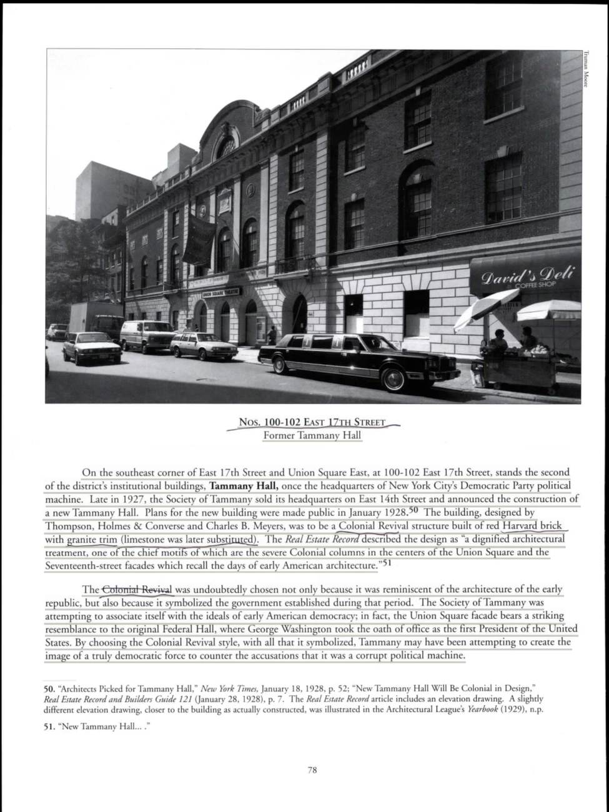
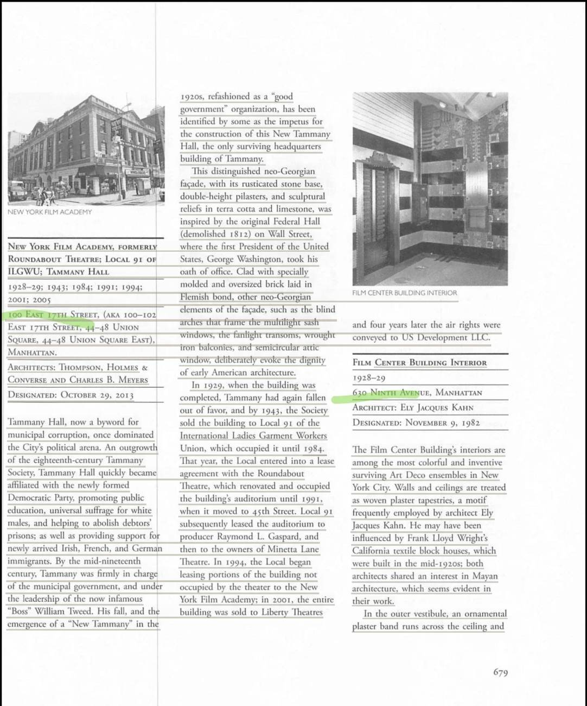
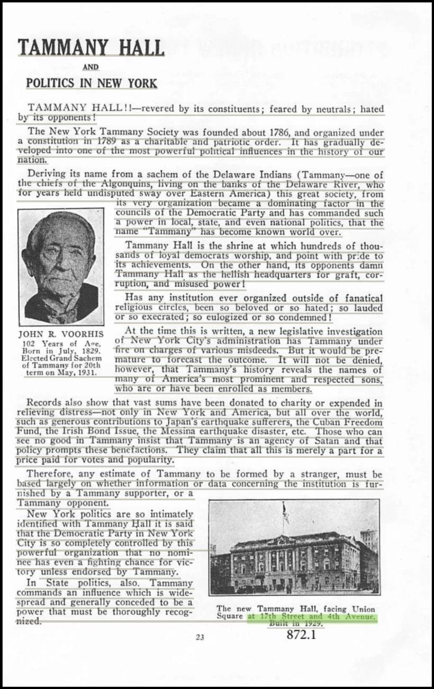
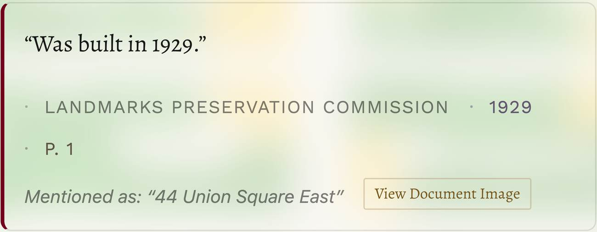
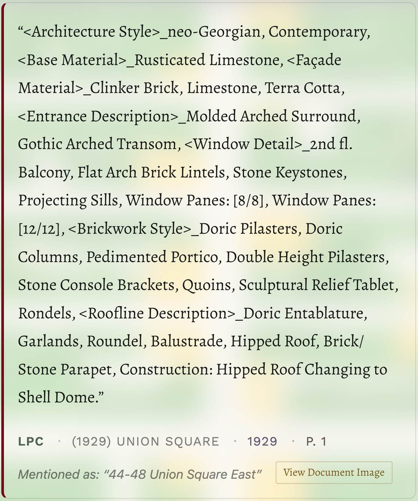
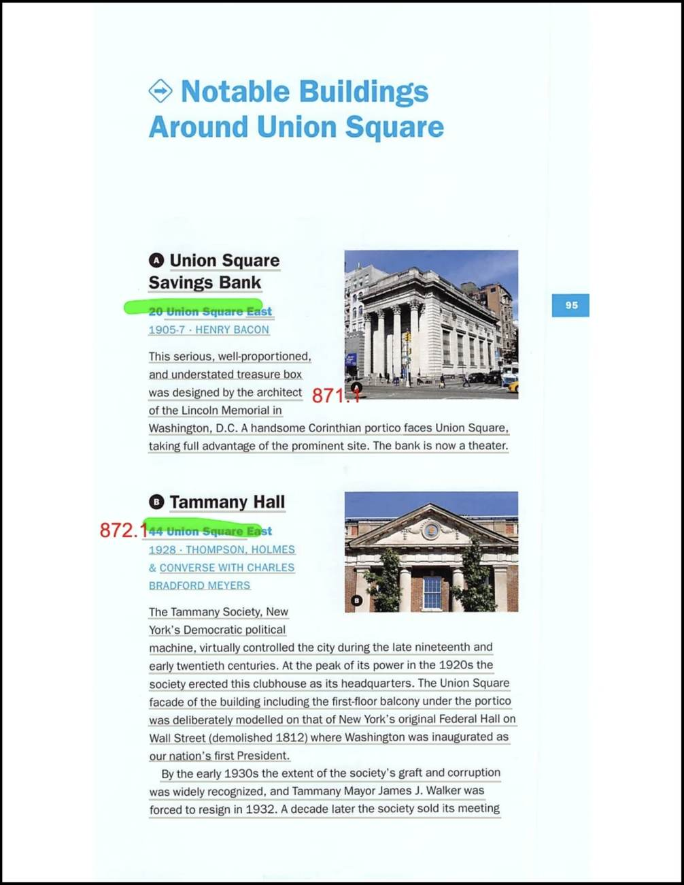
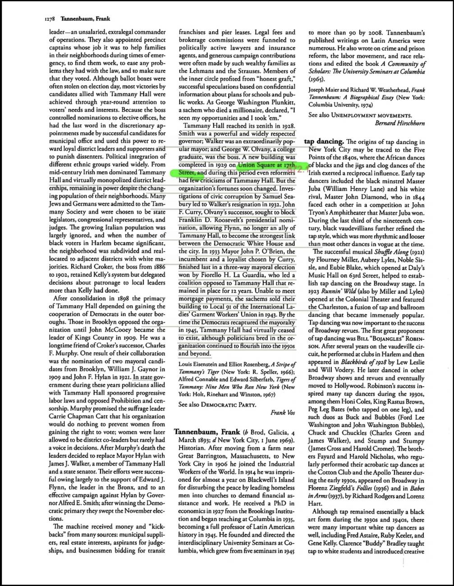
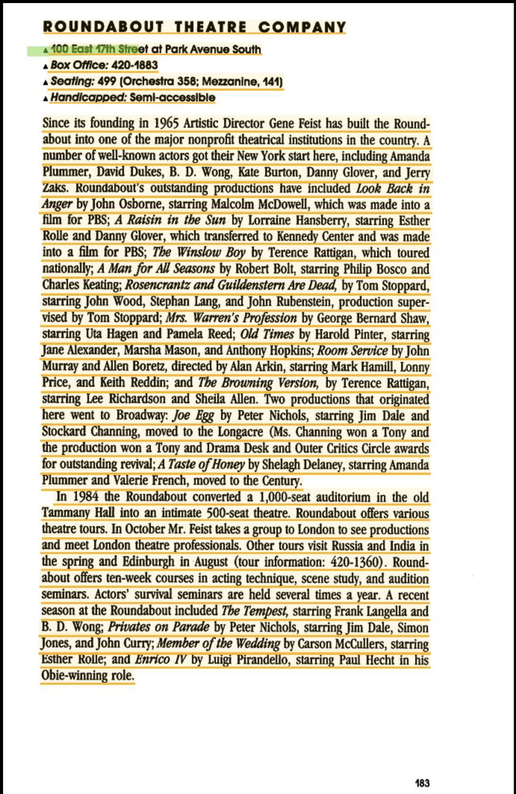
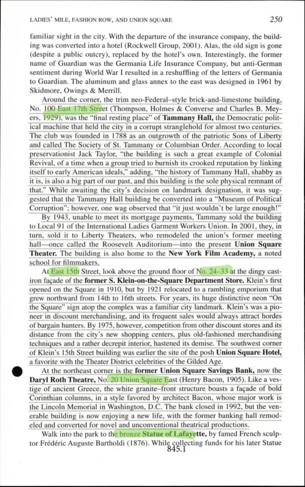
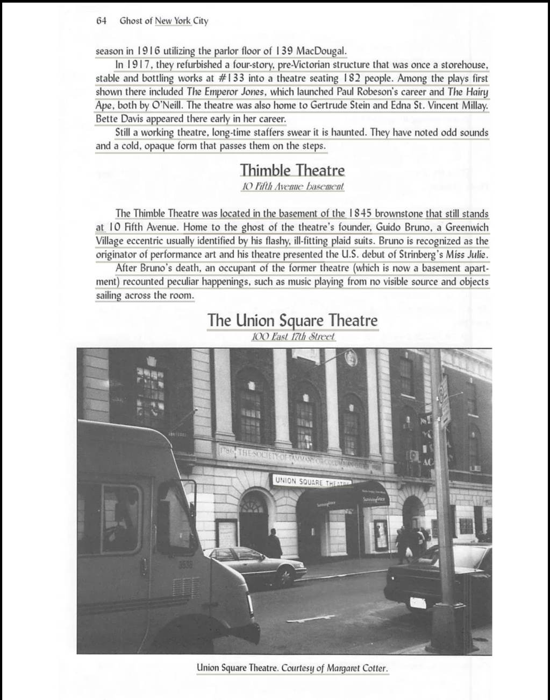

The Super-Duper Story of the Coolest Building on the Corner
Every previously italicized phrase is highlighted and colour-coded by source. Where the source page is on file, clicking the highlight opens the scan.
Hello there, friends! Pull up a comfy cushion, wiggle your toes, and get ready for one of the GREATEST stories ever told about a building! Yes, a BUILDING! This one is extra special, and by the end you'll want to go say hello to it. Let's gooo! 🎉
Imagine you're a teeny-tiny ant with a teeny-tiny backpack, hiking along the busy New York City sidewalks. If you turned the right corner, you'd bump right into our amazing building! (It sits on a sunny spot where two streets give each other a big hug — the corner of East 17th Street and Union Square East.)
(This building is one of the big, important buildings in the whole neighborhood.) And guess what? (It has SO many nicknames and address numbers that it's a little bit like a superhero with lots of secret identities!)
(Long, long ago, this building became home to a big, famous grown-up club.) The club had the funniest name — "Tammany Hall!" (People had REALLY big feelings about this club. Some people cheered for it, some people weren't sure about it, and some people wrinkled their noses at it.)
Where did that silly name come from? Here's the neat part! (It came from a wise Native American leader named Tammany, a chief who lived near a river a very, very long time ago.) (The club got so big and famous that people ALL around the whole wide world knew its name!)
The club did some really kind things, too. (They sent help and money to people far away who were having a hard time — like people who needed help after big earthquakes.) Giving and sharing — what good manners!
But not everybody trusted the club. (Some folks thought it was a little too tricky.) So (the club worked really hard to look honest and friendly, hoping people would stop saying mean things about it.) Hmmm, sneaky-sneaky!
Now for the hammer-and-nails part! (The club decided to sell its old home and build a shiny new one.) (They showed everybody the big plans in 1928.) (Two teams of super-smart builder-designers drew it all up.) And TA-DA — (the building was all finished in 1929!)
(The builders made it look like the fancy old days of America, with tall, proud columns that reminded everybody of long ago.) (It even looks like a super-famous building where George Washington, our very first President, stood up and made his big promise!) Wowza!
If you look really, REALLY closely, you'll spot all kinds of fun decorations — (pretty arched doorways, a little balcony to stand on, flowery garland designs, and a rooftop that slopes like a wizard's hat.) And the coolest part? (There's a special "Liberty Cap" hat sitting way up high on the building, like it's wearing a crown!) A building wearing a hat — how silly and wonderful!
For a little while, (the club was riding high at the tippy-top, like the king of the mountain!) But then — uh-oh! — things got wobbly. (Some grown-ups started asking lots of tricky questions, and one of the club's leaders had to pack up and leave his job.)
Then the saddest thing happened. The club ran out of money to pay for its beautiful building. 😢 So (they had to sell it to a group of hard-working people who made clothes.) After that, (the old club slowly faded away, like a sandcastle washed by the waves.)
But wait — don't be sad for the building! It didn't stay lonely for even one minute. It made LOTS of fun new friends!
First, (it became a busy, bustling place where the clothes-makers worked together.) Then the theater people came skipping in! (A group of actors took over and put on wonderful plays.) (They made a cozy little theater inside, turning a great big room into a snug one just right for shows.)
After that, (it became a theater with a new name,) and then — lights! camera! action! — (it became a school where kids and grown-ups could learn how to make movies!) From clubhouse to movie school — what an adventure!
Ooooh, here's a shivery part to make your arms get goosebumps! (People said the theater had a mysterious ghostly visitor who hid in a little crawl space and had glowing eyes like a sneaky cat in the dark!)
One night, things got super noisy — (windows and a sparkly chandelier started rattling all by themselves! But the maintenance man was very tired and just wanted to sleep, so he told the spooky noise to please be quiet... and guess what? It actually listened and stopped!) Hee hee! Even ghosts have a bedtime!
When grown-ups were trying to decide what to do with the old building, somebody had a giggly idea: (maybe they could turn it into a "Museum of All the Sneaky Tricks!") But a joker chuckled and said (the building wouldn't be big enough to fit ALL the sneaky tricks inside!) Ha ha ha!
And finally, this wonderful, hat-wearing, ghost-hosting, play-putting-on building got a very special honor. (In the year 2013, it was named a protected treasure forever and ever!) That means it's so special, it gets to be kept safe, because (it's the very last little piece left of that whole grand old story.)
And THAT, my dear friends, is the super-duper tale of the coolest building on the corner — a clubhouse, a workshop, a theater, a movie school, AND a ghost's bedroom, all rolled into one!
Every highlighted quote, in order of appearance, correlated to its underlying source. The swatch matches the highlight colour in the text.
| # | Verbatim Quote (abbreviated) | Source (Author, Title, Year, Page) |
|---|---|---|
| 1 | “It sits on a sunny spot where two streets give each other a big hug — the corner of East 17th Street and Union Square East.” | Dolkart, Gramercy, 1996, p. 78 [page scan] |
| 2 | “This building is one of the big, important buildings in the whole neighborhood.” | Dolkart, Gramercy, 1996, p. 78 [page scan] |
| 3 | “It has SO many nicknames and address numbers that it's a little bit like a superhero with lots of secret identities!” | Spielvogel, The Landmarks of New York, 2016, p. 679 [page scan] |
| # | Verbatim Quote (abbreviated) | Source (Author, Title, Year, Page) |
|---|---|---|
| 4 | “Long, long ago, this building became home to a big, famous grown-up club.” | Dolkart, Gramercy, 1996, p. 78 [page scan] |
| 5 | “People had REALLY big feelings about this club. Some people cheered for it, some people weren't sure about it, and some people wrinkled their noses at it.” | Chase, New York The Wonder City, 1932, p. 23 [page scan] |
| 6 | “It came from a wise Native American leader named Tammany, a chief who lived near a river a very, very long time ago.” | Chase, New York The Wonder City, 1932, p. 23 [page scan] |
| 7 | “The club got so big and famous that people ALL around the whole wide world knew its name!” | Chase, New York The Wonder City, 1932, p. 23 [page scan] |
| 8 | “They sent help and money to people far away who were having a hard time — like people who needed help after big earthquakes.” | Chase, New York The Wonder City, 1932, p. 23 [page scan] |
| 9 | “Some folks thought it was a little too tricky.” | Dolkart, Gramercy, 1996, p. 78 [page scan] |
| 10 | “the club worked really hard to look honest and friendly, hoping people would stop saying mean things about it.” | Dolkart, Gramercy, 1996, p. 78 [page scan] |
| # | Verbatim Quote (abbreviated) | Source (Author, Title, Year, Page) |
|---|---|---|
| 11 | “The club decided to sell its old home and build a shiny new one.” | Dolkart, Gramercy, 1996, p. 78 [page scan] |
| 12 | “They showed everybody the big plans in 1928.” | Dolkart, Gramercy, 1996, p. 78 [page scan] |
| 13 | “Two teams of super-smart builder-designers drew it all up.” | Dolkart, Gramercy, 1996, p. 78 [page scan] |
| 14 | “the building was all finished in 1929!” | Unknown Author, Landmarks Preservation Commission, n.d., p. 1 [page scan] |
| 15 | “The builders made it look like the fancy old days of America, with tall, proud columns that reminded everybody of long ago.” | Dolkart, Gramercy, 1996, p. 78 [page scan] |
| 16 | “It even looks like a super-famous building where George Washington, our very first President, stood up and made his big promise!” | Dolkart, Gramercy, 1996, p. 78 [page scan] |
| 17 | “pretty arched doorways, a little balcony to stand on, flowery garland designs, and a rooftop that slopes like a wizard's hat.” | LPC, Union Square, 1929, p. 1 [page scan] |
| 18 | “There's a special "Liberty Cap" hat sitting way up high on the building, like it's wearing a crown!” | Hennessy, Walking Broadway, 2020, p. 95 [page scan] |
| # | Verbatim Quote (abbreviated) | Source (Author, Title, Year, Page) |
|---|---|---|
| 19 | “the club was riding high at the tippy-top, like the king of the mountain!” | Jackson, The Encyclopedia of New York, 2010, p. 1278 [page scan] |
| 20 | “Some grown-ups started asking lots of tricky questions, and one of the club's leaders had to pack up and leave his job.” | Jackson, The Encyclopedia of New York, 2010, p. 1278 [page scan] |
| 21 | “they had to sell it to a group of hard-working people who made clothes.” | Jackson, The Encyclopedia of New York, 2010, p. 1278 [page scan] |
| 22 | “the old club slowly faded away, like a sandcastle washed by the waves.” | Jackson, The Encyclopedia of New York, 2010, p. 1278 [page scan] |
| # | Verbatim Quote (abbreviated) | Source (Author, Title, Year, Page) |
|---|---|---|
| 23 | “it became a busy, bustling place where the clothes-makers worked together.” | Hennessy, Walking Broadway, 2020, p. 95 [page scan] |
| 24 | “A group of actors took over and put on wonderful plays.” | Hennessy, Walking Broadway, 2020, p. 95 [page scan] |
| 25 | “They made a cozy little theater inside, turning a great big room into a snug one just right for shows.” | Lawliss, The New York Theatre Sourcebook, 1981, p. 183 [page scan] |
| 26 | “it became a theater with a new name,” | Wolfe, New York 15 Walking Tours, 2003, p. 250 [page scan] |
| 27 | “it became a school where kids and grown-ups could learn how to make movies!” | Wolfe, New York 15 Walking Tours, 2003, p. 250 [page scan] |
| # | Verbatim Quote (abbreviated) | Source (Author, Title, Year, Page) |
|---|---|---|
| 28 | “People said the theater had a mysterious ghostly visitor who hid in a little crawl space and had glowing eyes like a sneaky cat in the dark!” | Lanigan-Schmidt, Ghosts of New York City, 2003, p. 64 [page scan] |
| 29 | “windows and a sparkly chandelier started rattling all by themselves! But the maintenance man was very tired and just wanted to sleep, so he told the spooky noise to…” | Lanigan-Schmidt, Ghosts of New York City, 2003, p. 64 [page scan] |
| # | Verbatim Quote (abbreviated) | Source (Author, Title, Year, Page) |
|---|---|---|
| 30 | “maybe they could turn it into a "Museum of All the Sneaky Tricks!"” | Wolfe, New York 15 Walking Tours, 2003, p. 250 [page scan] |
| 31 | “the building wouldn't be big enough to fit ALL the sneaky tricks inside!” | Wolfe, New York 15 Walking Tours, 2003, p. 250 [page scan] |
| # | Verbatim Quote (abbreviated) | Source (Author, Title, Year, Page) |
|---|---|---|
| 32 | “In the year 2013, it was named a protected treasure forever and ever!” | Spielvogel, The Landmarks of New York, 2016, p. 679 [page scan] |
| 33 | “it's the very last little piece left of that whole grand old story.” | Wolfe, New York 15 Walking Tours, 2003, p. 250 [page scan] |
10 scanned pages, one per cited source page. Each lists the highlighted quotes drawn from it.
Quotes drawn from this page: 1 2 4 9 10 11 12 13 15 16

Quotes drawn from this page: 3 32

Quotes drawn from this page: 5 6 7 8

Quotes drawn from this page: 14

Quotes drawn from this page: 17

Quotes drawn from this page: 18 23 24

Quotes drawn from this page: 19 20 21 22

Quotes drawn from this page: 25

Quotes drawn from this page: 26 27 30 31 33

Quotes drawn from this page: 28 29
